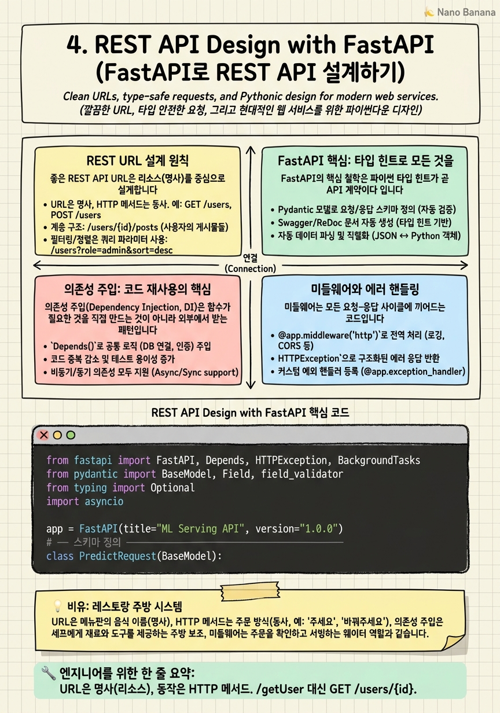

REST API Design with FastAPI

🎯 학습 목표
- REST API URL 설계 원칙(리소스 명명, 버전 관리)을 따를 수 있다
- FastAPI로 CRUD 엔드포인트를 구현하고 자동 문서를 생성할 수 있다
- Pydantic 모델로 요청/응답 스키마를 정의하고 유효성 검사를 자동화할 수 있다
- 의존성 주입으로 DB 연결, 인증, 공통 로직을 재사용할 수 있다
- 비동기 엔드포인트로 AI 모델 추론을 효율적으로 처리할 수 있다
API(Application Programming Interface)는 서로 다른 소프트웨어 시스템이 통신하는 계약서입니다. AI 모델을 서비스로 만들려면 모델을 감싸는 API가 필요합니다. 이 챕터에서는 현재 파이썬 생태계에서 가장 인기 있는 API 프레임워크인 FastAPI를 사용해 프로덕션 수준의 REST API를 설계하고 구현하는 방법을 배웁니다.
FastAPI는 2018년에 등장했지만 빠르게 Django, Flask를 제치고 파이썬 웹 프레임워크의 1위 자리에 올랐습니다. 성능(Starlette 기반 ASGI), 개발 생산성(자동 문서화, 타입 힌트), 그리고 AI/ML 워크로드 친화성이 이유입니다. Netflix, Uber, Microsoft가 내부 AI 서비스에 FastAPI를 사용합니다.
REST(Representational State Transfer)는 웹 API 설계 스타일입니다. 엄격한 규격이 아니라 6가지 원칙을 따르는 아키텍처 스타일입니다. 가장 중요한 원칙은 무상태성(Stateless) — 서버가 클라이언트의 상태를 기억하지 않고, 모든 요청이 독립적으로 처리되어야 한다는 것입니다.
핵심 내용
REST URL 설계 원칙
좋은 REST API URL은 리소스(명사) 를 중심으로 설계합니다. 행위는 HTTP 메서드로 표현합니다.
나쁜 URL 설계:
GET /getUser?id=123
POST /createModel
GET /deleteExperiment?id=456
좋은 URL 설계:
GET /users/123
POST /models
DELETE /experiments/456
복수형 명사 를 사용합니다. /user가 아니라 /users. 컬렉션은 복수형, 단일 리소스는 ID로 식별합니다.
계층 관계 는 URL 경로로 표현합니다. /users/123/experiments는 "사용자 123의 실험들"입니다. 단, 3레벨 이상 중첩은 복잡해지니 /experiments?user_id=123으로 평탄화하는 것을 고려합니다.
API 버전 관리 는 URL에 포함합니다. /api/v1/models. v1이 변경되어도 기존 클라이언트는 영향을 받지 않습니다.
FastAPI 핵심: 타입 힌트로 모든 것을
FastAPI의 핵심 철학은 파이썬 타입 힌트가 곧 API 계약이다 입니다. 함수 시그니처에 타입을 명시하면 FastAPI가 자동으로 요청 파싱, 유효성 검사, 직렬화, OpenAPI 문서를 생성합니다.
경로 매개변수(path parameter)는 URL의 {param} 부분입니다. def get_model(model_id: int) 처럼 정의하면 FastAPI가 문자열 "123"을 정수 123으로 변환합니다. 타입이 맞지 않으면 자동으로 422 Unprocessable Entity를 반환합니다.
쿼리 매개변수(query parameter)는 URL의 ?key=value 부분입니다. 함수 파라미터 중 경로 매개변수가 아닌 것은 자동으로 쿼리 파라미터가 됩니다. Optional[str] = None으로 선택적 파라미터를 만들 수 있습니다.
Pydantic 모델 은 요청/응답 바디의 스키마를 정의합니다. BaseModel을 상속하고 필드를 타입 힌트로 정의하면 됩니다. 중첩 모델, 기본값, 유효성 검사기를 지원합니다.
/docs 엔드포인트에 자동으로 Swagger UI가 생성되고, /openapi.json으로 OpenAPI 스펙을 내보낼 수 있습니다.
의존성 주입: 코드 재사용의 핵심
의존성 주입(Dependency Injection, DI)은 함수가 필요한 것을 직접 만드는 것이 아니라 외부에서 받는 패턴입니다. FastAPI의 Depends가 이를 우아하게 구현합니다.
가장 흔한 DI 사용 사례는 세 가지입니다.
데이터베이스 세션: 요청마다 DB 연결을 열고 끝나면 닫는 로직을 Depends(get_db_session)으로 모든 엔드포인트에서 재사용합니다.
인증: Depends(get_current_user)로 모든 엔드포인트에서 JWT 토큰 검증과 사용자 조회를 공통 처리합니다. 특정 엔드포인트만 관리자 권한을 요구할 때는 Depends(require_admin)을 추가합니다.
공통 쿼리 파라미터: 페이지네이션(offset, limit)처럼 여러 엔드포인트에서 공통으로 쓰는 파라미터를 Depends(PaginationParams)로 묶습니다.
DI는 테스트를 용이하게 합니다. 테스트 시 실제 DB 대신 모의(mock) DB를 주입할 수 있습니다.
미들웨어와 에러 핸들링
미들웨어는 모든 요청-응답 사이클에 끼어드는 코드입니다. 인증 확인, 로깅, CORS 처리, 응답 시간 측정 등에 사용됩니다.
FastAPI에서 미들웨어는 @app.middleware("http") 데코레이터로 정의합니다. 요청이 들어오면 처리 전 코드를 실행하고, await call_next(request)로 실제 핸들러를 호출한 뒤, 응답이 나오면 처리 후 코드를 실행합니다.
전역 에러 핸들러 는 @app.exception_handler로 특정 예외를 HTTP 응답으로 변환합니다. 코드 곳곳에 try-except를 넣는 대신, 비즈니스 예외를 던지고 최상위에서 한 번에 처리합니다. HTTPException은 FastAPI가 자동으로 처리하므로, 커스텀 예외만 핸들러를 등록합니다.
응답 모델 (response_model=)은 응답에서 특정 필드만 노출하는 역할을 합니다. 데이터베이스 모델에 hashed_password가 있어도, 응답 모델에 포함되지 않으면 절대 노출되지 않습니다. 보안의 핵심 패턴입니다.
백그라운드 태스크와 비동기 처리
AI API에서 자주 만나는 패턴은 즉시 응답하고 처리를 백그라운드에서 하는 것입니다. 대규모 문서 분석, 배치 추론, 이메일 발송 등이 해당됩니다.
FastAPI의 BackgroundTasks는 응답을 먼저 보낸 뒤 함수를 비동기로 실행합니다. 단순한 경우에 적합하지만, 서버가 재시작되면 실행 중인 태스크가 유실될 수 있습니다. 프로덕션에서는 Celery + Redis 또는 ARQ 같은 분산 태스크 큐를 사용합니다.
비동기 엔드포인트 (async def)는 FastAPI에서 기본이지만 주의할 점이 있습니다. async def 함수 안에서 동기 블로킹 코드(일반 DB 드라이버, requests 라이브러리, 무거운 CPU 작업)를 실행하면 이벤트 루프 전체가 블로킹됩니다. CPU 집약적 작업은 asyncio.run_in_executor로 스레드풀에서 실행해야 합니다.
💡 비유로 이해하기
FastAPI의 의존성 주입과 미들웨어를 레스토랑으로 이해해봅시다. 각 테이블(HTTP 요청)이 들어오면 웨이터(FastAPI 라우터)가 주문을 받습니다. 메뉴판(OpenAPI 스펙)은 자동으로 생성됩니다.
의존성 주입은 공용 자원 관리 입니다. 매 요청마다 새 냉장고를 살 수 없듯, DB 연결 풀을 미리 만들어 두고 각 엔드포인트가 Depends(get_db)로 꺼내 씁니다. 다 쓰면 다시 풀에 반납합니다.
미들웨어는 모든 손님에게 적용되는 서비스 표준 입니다. 레스토랑 입구에서 복장 체크(인증 미들웨어), 손 소독(CORS 헤더), 대기 시간 기록(로깅 미들웨어)을 하는 것처럼, 미들웨어는 어떤 엔드포인트로 가는 요청이든 반드시 거쳐야 하는 공통 처리입니다.
💻 코드 예시
FastAPI로 AI 모델 서빙 API의 핵심 구조를 구현합니다. Pydantic 스키마, 의존성 주입, 비동기 추론, 에러 핸들링을 모두 포함합니다.
from fastapi import FastAPI, Depends, HTTPException, BackgroundTasks
from pydantic import BaseModel, Field, field_validator
from typing import Optional
import asyncio
app = FastAPI(title="ML Serving API", version="1.0.0")
# ── 스키마 정의 ────────────────────────────────────────
class PredictRequest(BaseModel):
text: str = Field(..., min_length=1, max_length=10000)
model_name: str = Field(default="default", pattern=r"^[a-z0-9-]+$")
threshold: float = Field(default=0.5, ge=0.0, le=1.0)
@field_validator("text")
@classmethod
def text_must_not_be_empty(cls, v: str) -> str:
if v.strip() == "":
raise ValueError("text must not be blank")
return v.strip()
class PredictResponse(BaseModel):
label: str
score: float
model_name: str
request_id: str
# ── 의존성 ────────────────────────────────────────────
class ModelRegistry:
models: dict = {"default": None} # 실제론 로드된 모델
model_registry = ModelRegistry()
def get_model(model_name: str) -> object:
if model_name not in model_registry.models:
raise HTTPException(status_code=404, detail=f"Model '{model_name}' not found")
return model_registry.models[model_name]
# ── 엔드포인트 ────────────────────────────────────────
@app.post("/v1/predict", response_model=PredictResponse)
async def predict(
request: PredictRequest,
background_tasks: BackgroundTasks,
model=Depends(lambda: get_model(request.model_name if False else "default")),
):
# 실제 추론 (비동기 실행)
await asyncio.sleep(0.01) # GPU 추론 시뮬레이션
result = {"label": "positive", "score": 0.92}
# 로깅은 백그라운드에서
background_tasks.add_task(log_prediction, request.text, result)
return PredictResponse(
label=result["label"],
score=result["score"],
model_name=request.model_name,
request_id="req-001",
)
async def log_prediction(text: str, result: dict):
# 응답 후 비동기로 DB에 저장
pass
@app.get("/health")
async def health_check():
return {"status": "healthy"}Field(...)의 ...는 필수 항목을 의미합니다. min_length, max_length, ge, le로 범위 검증을 자동화합니다. response_model=PredictResponse는 이 모델에 없는 필드는 응답에서 자동 제거합니다. BackgroundTasks는 응답을 먼저 클라이언트에 보낸 후 log_prediction을 비동기로 실행합니다.
🏭 현업에서의 평가
✅ 시니어가 보는 것
- response_model을 사용해 민감 필드 노출을 방지하는가
- 의존성 주입으로 DB 세션과 인증을 처리하는가 (전역 변수 대신)
- 유효성 검사 오류를 적절한 HTTP 상태 코드로 변환하는가
- 비동기 함수 안에서 동기 블로킹 코드를 사용하지 않는가
⚠️ 레드 플래그
- `global` 변수로 DB 연결을 관리하는 경우
- 모든 에러를 `500 Internal Server Error`로 반환하는 경우
- `async def`를 쓰면서 내부에서 동기 `requests` 라이브러리를 사용하는 경우
🎤 예상 인터뷰 질문
- FastAPI에서 특정 엔드포인트에만 관리자 권한을 요구하려면 어떻게 구현하겠어요?
- response_model이 단순히 직렬화를 위한 것이 아닌 이유를 설명해주세요.
- 수천 개의 동시 추론 요청을 처리할 때 FastAPI 레벨에서 할 수 있는 최적화는 무엇인가요?
✨ 핵심 요약
리소스 중심 URL
URL은 명사(리소스), 동작은 HTTP 메서드. /getUser 대신 GET /users/{id}.
Pydantic = 자동 검증
타입 힌트로 스키마를 정의하면 파싱·검증·직렬화·문서화가 자동으로 이루어진다.
Depends로 DI
DB 연결, 인증, 공통 쿼리 파라미터는 의존성 주입으로 재사용한다.
response_model은 보안
응답 모델에 없는 필드는 절대 노출되지 않는다. hashed_password 같은 민감 정보 보호에 필수.
BackgroundTasks
응답 후 실행할 작업(로깅, 알림)은 BackgroundTasks로 비동기 처리한다.
/docs 자동 생성
FastAPI는 코드에서 Swagger UI를 자동으로 생성한다. 별도 문서 작성이 불필요하다.